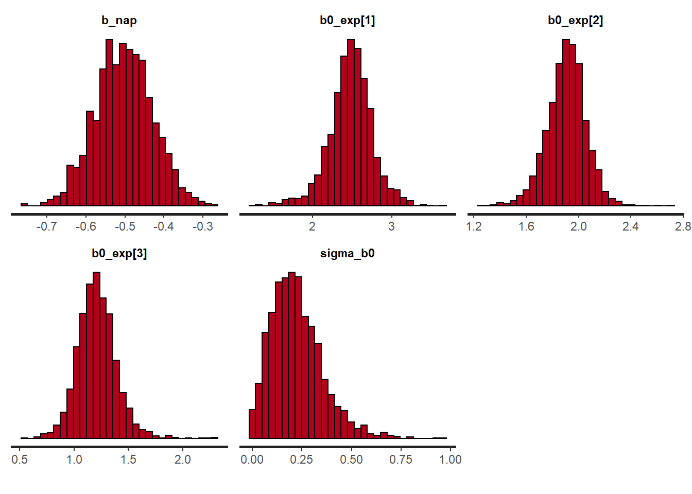

Modèles hiérarchiques bayésiens
Dans ce laboratoire, nous verrons comment écrire un modèle hiérarchique bayésien dans le langage Stan.
Données
Comme dans l’exemple réalisé avec brms dans les notes de cours, nous utiliserons le même jeu de données rikz.
rikz <- read.csv("../donnees/rikz.csv")
head(rikz)## Sample Richness Exposure NAP Beach
## 1 1 11 10 0.045 1
## 2 2 10 10 -1.036 1
## 3 3 13 10 -1.336 1
## 4 4 11 10 0.616 1
## 5 5 10 10 -0.684 1
## 6 6 8 8 1.190 2Créer un modèle Stan
Dans RStudio, aller dans File -> New File -> Stan File. RStudio crée un nouveau fichier de code Stan contenant déjà un exemple de modèle. Enregistrez le ficher avec l’extension .stan (ex.: rikz.stan) avant de continuer.
D’abord, remarquez que le symbole // sert à dénoter des commentaires dans Stan, contrairement à R qui utilise # pour la même fonction. Excepté ces commentaires, le fichier Stan créé contient trois blocs.
data: Définit les variables qui seront fournies au modèle comme données à l’entrée.parameters: Définit les variables qui doivent être estimées par le modèle.model: Définit le modèle statistique pour les données en fonction des paramères.
La plupart des modèles Stan utilisent au minimum ces trois blocs, bien que d’autres blocs soient possibles: functions, transformed data, transformed parameters et generated quantities. Comme dans R, les blocs sont délimités par des accolades {}.
Le bloc model ne contient qu’une instruction, y ~ normal(mu, sigma);, qui indique que y suit une distribution normale avec moyenne mu et écart-type sigma. Dans Stan, le symbole ~ est utilisé pour assigner une certaine distribution de probabilité à une variable (contrairement à R où ce symbole sert à relier la réponse d’un modèle aux prédicteurs).
Note: Dans Stan, toutes les instructions doivent se terminer par un point-virgule ;, sauf celles qui débutent un bloc (comme model).
Déclaration de variables
Contrairement à R, toutes les variables apparaissant dans un modèle Stan doivent être au préalable “déclarées”. La première ligne de data, int<lower=0> N; déclare la variable N qui est un nombre entier (type int pour integer) prenant une valeur minimale de 0. Il est important de différencier les variables int prenant seulement des valeurs entières des variables pouvant prendre n’importe quelle valeur réelle (real). La spécification de bornes inférieures (lower) ou supérieures (upper) est optionnelle pour les éléments de data, mais elles permettent à Stan de produire une erreur si les données fournies à l’entrée ne respectent pas ces bornes. Dans ce cas-ci, la borne inférieure devrait probablement être de 1 vu que les données contiennent au moins 1 observation.
La deuxième ligne de data, vector[N] y; déclare la variable y comme un vecteur de N éléments. Notez qu’il était important de déclarer N avant de l’utiliser dans la déclaration de y. Les vecteurs dans Stan fonctionnent de façon similaire à R, excepté qu’ils peuvent seulement être composés de nombres réels (nous verrons plus tard comment définir l’équivalent d’un vecteur pour des nombres entiers).
Le bloc parameters déclare deux variables réelles, mu et sigma, la deuxième étant contrainte à être supérieure ou égale à 0. Il est important de définir les valeurs minimales et maximales possibles pour les paramètres, sinon Stan pourrait tenter par exemple d’assigner une valeur négative à sigma, ce qui générerait une erreur lorsque celle-ci serait utilisée comme écart-type de la distribution normale dans le modèle.
Vectorisation
Puisque y est un vecteur de N éléments, alors que mu et sigma contiennent chacun une seule valeur, l’instruction y ~ normal(mu, sigma); dans le bloc model indique que chaque élément de y suit la distribution normale avec paramètres mu et sigma. Dans un modèle de régression linéaire par exemple, mu serait aussi un vecteur de taille N, donc la même instruction associerait chaque y au mu correspondant, tandis que tous les éléments partageraient le même sigma.
Représentation du modèle pour les données rikz
Régression de Poisson
Modifions maintenant le programme pour représenter notre modèle du jeu de données rikz. Commençons par décrire une régression de Poisson de la richesse spécifique en fonction du NAP, en ignorant l’effet de l’indice d’exposition et l’effet aléatoire de la plage.
Il est préférable de donner aux variables des noms plus descriptifs que x, y ou N. Dans le bloc data, changeons donc N pour n_obs (nombre d’observations) et y pour richesse, le nom de notre variable réponse.
Pour une variable entière (comme la richesse spécifique), nous ne pouvons pas définir un vecteur, mais plutôt un “tableau” (array) de n_obs éléments, comme suit: int<lower=0> richesse[n_obs];. Notez que dans ce cas, la spécification du nombre d’éléments apparaît après le nom de la variable, contrairement à un vecteur où elle apparaît après le mot vector.
Nous ajoutons aussi le prédicteur nap qui sera un vecteur de n_obs éléments.
Remplaçons le contenu du bloc parameters par deux paramètres de notre régression, b0 (l’ordonnée à l’origine) et b_nap (l’effet du NAP), tous deux réels.
Dans le bloc model, nous déclarons d’abord log_lambda comme un vecteur de taille n_obs, qui contiendra le log de la prédiction moyenne pour chaque observation. Les variables déclarées dans le bloc model servent souvent à définir des valeurs “intermédiaires” qui ne sont ni des paramètres du modèle, ni des données.
Nous pouvons ensuite spécifier l’équation pour le prédicteur linéaire:
log_lambda = b0 + b_nap * nap;Comme dans R, cette équation est vectorisée, c’est-à-dire que chacun des n_obs éléments de log_lambda est calculé à partir de l’élément correspondant de nap, tandis que b0 et b_nap ne prennent qu’une valeur.
Finalement, nous remplaçons la distribution normale pour y par une distribution de poisson pour richesse. Puisque l’unique paramètre de la distribution de Poisson est l’exponentielle de log_lambda, nous pourrions écrire richesse ~ poisson(exp(log_lambda));. Cependant, puisque la régression de Poisson avec un lien log est un modèle courant, Stan nous offre un raccourci, la fonction poisson_log, qui définit une distribution de Poisson en fonction du log de lambda:
richesse ~ poisson_log(log_lambda);Voici à quoi devrait ressembler votre modèle jusqu’à présent:
data {
int<lower=1> n_obs; // Nombre d'observations
int<lower=0> richesse[n_obs]; // Richesse spécifique
vector[n_obs] nap;
}
parameters {
real b0;
real b_nap;
}
model {
vector[n_obs] log_lambda;
log_lambda = b0 + b_nap * nap;
richesse ~ poisson_log(log_lambda);
} En haut à droite de la fenêtre du script, au lieu du bouton Run présent pour un script R, il y a un bouton Check qui permet de vérifier la syntaxe du modèle Stan.
Vectorisation et boucles
Les fonctions de distribution pour des nombres entiers, comme poisson_log, sont particulières, car elles peuvent être vectorisées (chaque élément de richesse suit une distribution selon le log_lambda correspondant) même si richesse n’est pas un vecteur comme tel. Ce ne sont pas toutes les expressions avec des nombres entiers (type int) qui sont vectorisées dans Stan. Sans vectorisation, il faudrait définir une boucle avec l’instruction for, comme suit:
for (i in 1:n_obs)
richesse[i] ~ poisson_log(log_lambda[i]);Il s’agit d’une boucle for, avec une variable de comptage i qui prendra successivement les valeurs de 1 à n_obs. Pour chaque valeur de i, les instructions dans la boucle sont exécutées, donc ici richesse[i] suit une distribution de Poisson avec le paramètre log_lambda[i].
En général, les instructions de la boucle (le bloc for) devraient être délimitées par des accolades, mais celles-ci peuvent être omises lorsqu’il n’y a qu’une seule instruction.
Lorsque la vectorisation est possible, elle permet d’écrire un modèle de façon plus compacte et son exécution sera aussi plus rapide.
Modèle hiérarchique
Nous pouvons maintenant définir le deuxième niveau de la régression, soit l’effet de chaque plage et de son facteur d’exposition sur l’ordonnée à l’origine b0.
Tout d’abord, nous devons effectuer quelques modifications à nos données dans R. Dans Stan, une variable catégorielle doit être codée par des nombres entiers allant de 1 à \(M\), où \(M\) est le nombre de catégories. C’est déjà le cas pour la variable Beach. Cependant, pour représenter la variable Exposure comme un facteur à trois niveaux, nous devrons la convertir d’abord en facteur, puis en nombre entier.
rikz$Exp_cat <- as.integer(as.factor(rikz$Exposure))
head(rikz)## Sample Richness Exposure NAP Beach Exp_cat
## 1 1 11 10 0.045 1 2
## 2 2 10 10 -1.036 1 2
## 3 3 13 10 -1.336 1 2
## 4 4 11 10 0.616 1 2
## 5 5 10 10 -0.684 1 2
## 6 6 8 8 1.190 2 1Les valeurs 8, 10 et 11 d’Exposure correspondent donc à 1, 2 et 3 dans la nouvelle variable Exp_cat.
Ensuite, nous créons un jeu de données séparé pour les données au niveau de la plage. La fonction distinct de dplyr conserve les combinaisons uniques de Beach et Exp_cat présentes dans le jeu de données rikz.
library(dplyr)
plages <- distinct(rikz, Beach, Exp_cat) %>%
arrange(Beach)
plages## Beach Exp_cat
## 1 1 2
## 2 2 1
## 3 3 3
## 4 4 3
## 5 5 2
## 6 6 3
## 7 7 3
## 8 8 2
## 9 9 2Il est prudent d’ordonner ce deuxième jeu de données par numéro de plage, afin que les valeurs de la variable Exp_cat soient données à Stan dans le bon ordre.
Nous sommes maintenant prêts à modifier le programme Stan. Sous data, nous devons déclarer les variables suivantes:
int<lower=1> n_plages;qui dénotera le nombre de plages présentes dans le jeu de données;int<lower=1, upper=n_plages> plage[n_obs];, un tableau contenant pour chaque observation le numéro de la plage correspondante;int<lower=1> n_exp;, le nombre de niveaux de l’indice d’exposition;int<lower=1, upper = n_exp> exposure[n_plages];, un tableau contenant le niveau de l’indice d’exposition pour chaque plage (donc la variableExp_catci-dessus).
Dans le bloc parameters, l’ordonnée à l’origine du modèle b0 est maintenant un vecteur de n_plages valeurs et nous devons ajouter les paramètres suivants: b0_exp, un vecteur contenant l’ordonnée à l’origine moyenne pour chaque valeur d’exposure et sigma_b0, un paramètre réel avec borne inférieure à 0, représentant l’écart-type de b0 par plage autour de cette moyenne.
Finalement, dans le bloc model, nous ajoutons l’équation pour la régression de b0 par plage, qui suit une distribution normale avec pour moyenne le b0_exp correspondant à son indice d’exposition et pour écart-type sigma_b0.
b0 ~ normal(b0_exp[exposure], sigma_b0);Notez que cette expression est un raccourci pour la boucle:
for (i in 1:n_plages)
b0[i] ~ normal(b0_exp[exposure[i]], sigma_b0);Par exemple, pour la première plage i = 1, on prend la valeur exposure[1], qui est égale à 2, puis on prend b0_exp[2] comme ordonnée à l’origine moyenne pour cette plage.
Note: Pour ce modèle-ci, l’effet aléatoire par plage b0 est une valeur intermédiaire que nous aurions pu définir dans le bloc parameters ou model. La différence est qu’à la sortie du programme, Stan fournira des estimés de la distribution des variables définies dans parameters, mais pas celles définies dans model.
Dans l’équation pour log_lambda, la valeur b0 doit être remplacée par celle spécifique à la plage:
log_lambda = b0[plage] + b_nap * nap;
Encore une fois, il s’agit d’un raccourci remplaçant la boucle:
for (i in 1:n_obs)
log_lambda[i] = b0[plage[i]] + b_nap * nap[i];Distributions a priori
Ce modèle contient trois paramètres actuellement sans distribution: b_nap, b0_exp (un vecteur de trois valeurs) et sigma_b0. Si nous ne spécifions pas de distribution a priori pour ces paramètres, Stan choisit des distributions a priori extrêmement diffuses à l’intérieur des bornes spécifiées, qui produisent des estimés équivalents au maximum de vraisemblance. Cela fonctionne si on a beaucoup de données, mais comme nous avons vu dans le cours, il est recommandé dans l’approche bayésienne de choisir des distributions a priori qui établissent de légères contraintes sur la valeur de nos paramètres.
Nous utiliserons les mêmes distributions a priori que pour l’exemple avec brms dans les notes de cours:
b_nap ~ normal(0, 1);
b0_exp ~ normal(2, 1);
sigma_b0 ~ normal(0, 0.5);Notez que les trois valeurs de b0_exp ont la même distribution a priori que l’ordonnée à l’origine dans les notes de cours. En utilisant brms, le modèle est paramétrisé de façon différente pour le prédicteur catégoriel exposure (avec des contrastes, comme dans R). Ici nous ajustons une ordonnée à l’origine pour chaque valeur d’exposure, plutôt qu’une ordonnée à l’origine pour le niveau de référence et des contrastes pour les différences entre ce niveau et référence et les deux autres niveaux.
Note: Ici, la réponse (sur l’échelle du log) et le prédicteur numérique NAP prennent des valeurs sur une échelle de quelques unités. Si les variables numériques du problèmes ont des ordres de grandeur très différents les unes des autres, il peut être utile de les normaliser, par exemple avec scale dans R, car l’algorithme d’inférence bayésienne fonctionne mieux si toutes les variables ont des échelles comparables, plutôt que de comporter des valeurs très grandes et très petites.
Voici le programme obtenu jusqu’à maintenant:
data {
int<lower=1> n_obs; // Nombre d'observations
int<lower=1> n_plages; // Nombre de plages
int<lower=0> richesse[n_obs]; // Richesse spécifique
vector[n_obs] nap;
int<lower=1, upper=n_plages> plage[n_obs]; // Plage correspondant à chaque obs.
int<lower=1> n_exp; // Nombre de niveaux de la variable exposure
int<lower=1, upper = n_exp> exposure[n_plages];
}
parameters {
vector[n_plages] b0;
real b_nap;
vector[n_exp] b0_exp; // Ordonnée à l'origine moyenne pour chaque niveau d'exposure
real<lower=0> sigma_b0; // Écart-type de l'ordonnée à l'origine
}
model {
vector[n_obs] log_lambda;
b_nap ~ normal(0, 1);
b0_exp ~ normal(2, 1);
sigma_b0 ~ normal(0, 0.5);
b0 ~ normal(b0_exp[exposure], sigma_b0);
log_lambda = b0[plage] + b_nap * nap;
richesse ~ poisson_log(log_lambda);
} Ajustement du modèle dans R
Pour ajuster un modèle écrit dans le langage Stan, nous utilisons le package rstan.
library(rstan)D’abord, nous créons une liste de données qui contiendra chaque variable incluse dans le bloc data du modèle. Il est important que le nom des éléments de la liste (avant chaque =) soit le même que le nom de la variable dans le code Stan. Par exemple, ici nous obtenons n_obs à partir du nombre de rangées du jeu de données rikz, richesse à partir de la colonne rikz$Richness, etc.
rikz_dat <- list(
n_obs = nrow(rikz),
n_plages = nrow(plages),
richesse = rikz$Richness,
nap = rikz$NAP,
plage = rikz$Beach,
n_exp = max(plages$Exp_cat),
exposure = plages$Exp_cat
)Ensuite, l’ajustement du modèle à l’aide de l’algorithme de Monte-Carlo se fait en deux temps. D’abord, nous compilons le programme Stan dans un object rikz_mod avec stan_model, puis nous procédons à l’ajustement à partir de ce modèle et de nos données rikz_dat avec sampling. Nous spécifions un nombre de chaînes (2) plus petit que la valeur par défaut, qui est de 4, mais nous gardons les autres valeurs par défaut (2000 itérations, dont 1000 de rodage).
La fonction sampling affiche sa progression pour chaque chaîne. Ici, après la compilation qui prend quelques minutes, l’ajustement se fait très rapidement.
rikz_mod <- stan_model("rikz.stan")
rikz_res <- sampling(rikz_mod, data = rikz_dat, chains = 2)##
## SAMPLING FOR MODEL 'rikz' NOW (CHAIN 1).
## Chain 1:
## Chain 1: Gradient evaluation took 0 seconds
## Chain 1: 1000 transitions using 10 leapfrog steps per transition would take 0 seconds.
## Chain 1: Adjust your expectations accordingly!
## Chain 1:
## Chain 1:
## Chain 1: Iteration: 1 / 2000 [ 0%] (Warmup)
## Chain 1: Iteration: 200 / 2000 [ 10%] (Warmup)
## Chain 1: Iteration: 400 / 2000 [ 20%] (Warmup)
## Chain 1: Iteration: 600 / 2000 [ 30%] (Warmup)
## Chain 1: Iteration: 800 / 2000 [ 40%] (Warmup)
## Chain 1: Iteration: 1000 / 2000 [ 50%] (Warmup)
## Chain 1: Iteration: 1001 / 2000 [ 50%] (Sampling)
## Chain 1: Iteration: 1200 / 2000 [ 60%] (Sampling)
## Chain 1: Iteration: 1400 / 2000 [ 70%] (Sampling)
## Chain 1: Iteration: 1600 / 2000 [ 80%] (Sampling)
## Chain 1: Iteration: 1800 / 2000 [ 90%] (Sampling)
## Chain 1: Iteration: 2000 / 2000 [100%] (Sampling)
## Chain 1:
## Chain 1: Elapsed Time: 0.235 seconds (Warm-up)
## Chain 1: 0.182 seconds (Sampling)
## Chain 1: 0.417 seconds (Total)
## Chain 1:
##
## SAMPLING FOR MODEL 'rikz' NOW (CHAIN 2).
## Chain 2:
## Chain 2: Gradient evaluation took 0 seconds
## Chain 2: 1000 transitions using 10 leapfrog steps per transition would take 0 seconds.
## Chain 2: Adjust your expectations accordingly!
## Chain 2:
## Chain 2:
## Chain 2: Iteration: 1 / 2000 [ 0%] (Warmup)
## Chain 2: Iteration: 200 / 2000 [ 10%] (Warmup)
## Chain 2: Iteration: 400 / 2000 [ 20%] (Warmup)
## Chain 2: Iteration: 600 / 2000 [ 30%] (Warmup)
## Chain 2: Iteration: 800 / 2000 [ 40%] (Warmup)
## Chain 2: Iteration: 1000 / 2000 [ 50%] (Warmup)
## Chain 2: Iteration: 1001 / 2000 [ 50%] (Sampling)
## Chain 2: Iteration: 1200 / 2000 [ 60%] (Sampling)
## Chain 2: Iteration: 1400 / 2000 [ 70%] (Sampling)
## Chain 2: Iteration: 1600 / 2000 [ 80%] (Sampling)
## Chain 2: Iteration: 1800 / 2000 [ 90%] (Sampling)
## Chain 2: Iteration: 2000 / 2000 [100%] (Sampling)
## Chain 2:
## Chain 2: Elapsed Time: 0.237 seconds (Warm-up)
## Chain 2: 0.394 seconds (Sampling)
## Chain 2: 0.631 seconds (Total)
## Chain 2:## Warning: There were 20 divergent transitions after warmup. See
## http://mc-stan.org/misc/warnings.html#divergent-transitions-after-warmup
## to find out why this is a problem and how to eliminate them.## Warning: Examine the pairs() plot to diagnose sampling problemsIci, Stan nous avertit qu’il y a plusieurs transitions divergentes dans la période d’échantillonnage, donc la validité des inférences pourrait être compromise. Pour diagnostiquer ce problème, il peut être utile de lancer l’application interactive ShinyStan, à partir du package du même nom. Notez que l’application ShinyStan est aussi compatible avec la sortie d’un modèle ajusté avec brms.
library(shinystan)
launch_shinystan(rikz_res)Pour l’instant, nous nous concentrons sur l’onglet Diagnose de l’application. Vous pouvez voir la distribution d’une variable pour chaque itération et les valeurs correspondant aux itérations divergentes sont données par des points en rouge. En particulier, si vous choisissez la variable sigma_b0, vous verrez que les divergences se produisent pour des petites valeurs de sigma_b0.
Paramétrisation non-centrée
Dans le modèle ci-dessus, nous demandions à Stan d’estimer à la fois les effets aléatoires b0 de chaque plage, ainsi que leur écart-type sigma_b0. Au niveau de l’algorithme, la dépendance entre ces quantités peut poser problème. Brièvement, cela est dû au fait que quand l’écart-type sigma_b0 est très petit, mêmes les très petites déviations de b0 autour de leur valeur moyenne deviennent improbables; ainsi les gradients de la vraisemblance sont très abrupts et la chaîne de Markov ne peut progresser normalement.
Il est donc recommandé d’utiliser une paramétrisation dite “non-centrée” pour les effets aléatoires dans Stan. Autrement dit, si l’ordonnée à l’origine d’un groupe \(j\) est tirée d’une distribution normale avec une moyenne \(\mu_{\beta_0}\) et un écart-type \(\sigma_{\beta_0}\):
\[\beta_{0j} \sim \text{N}(\mu_{\beta_0}, \sigma_{\beta_0})\]
nous pouvons représenter le même modèle comme suit:
\[\beta_{0j} = \mu_{\beta_0} + \sigma_{\beta_0} \nu_j\]
où \(\nu_j \sim \text{N}(0, 1)\) est une variable normale centrée réduite. Puisque les effets aléatoires \(\nu_j\) sont représentés en multiples de \(\sigma_{\beta_0}\), ces deux paramètres se retrouvent donc découplés.
Dans le code ci-dessous, nous avons utilisé la variable b0_alea pour \(\nu_j\). Puisque b0 est maintenant une valeur dépendant entièrement d’une combinaison d’autres paramètres et de données, nous pouvons la définir dans un nouveau bloc transformed parameters. La distribution des variables dans ce bloc, comme celles de parameters, seront données par Stan à la sortie du programme.
data {
int<lower=1> n_obs; // Nombre d'observations
int<lower=1> n_plages; // Nombre de plages
int<lower=0> richesse[n_obs]; // Richesse spécifique
vector[n_obs] nap;
int<lower=1, upper=n_plages> plage[n_obs]; // Plage correspondant à chaque obs.
int<lower=1> n_exp; // Nombre de niveaux de la variable exposure
int<lower=1, upper = n_exp> exposure[n_plages];
}
parameters {
vector[n_plages] b0_alea; // Effet aléatoire normalisé sur l'ordonnée à l'origine
real b_nap;
vector[n_exp] b0_exp; // Ordonnée à l'origine moyenne pour chaque niveau d'exposure
real<lower=0> sigma_b0; // Écart-type de l'ordonnée à l'origine
}
transformed parameters {
vector[n_plages] b0;
b0 = b0_exp[exposure] + sigma_b0 * b0_alea;
}
model {
vector[n_obs] log_lambda;
b_nap ~ normal(0, 1);
b0_exp ~ normal(2, 1);
sigma_b0 ~ normal(0, 0.5);
b0_alea ~ normal(0, 1);
log_lambda = b0[plage] + b_nap * nap;
richesse ~ poisson_log(log_lambda);
} En ajustant cette nouvelle version du modèle, les divergences sont éliminées ou du moins réduites. (Dans cet exemple particulier où la distribution a posteriori de sigma_b0 s’approche de 0, il pourrait être nécessaire d’augmenter adapt_delta, tel que vu dans l’exemple du cours 9, pour complètement éliminer les divergences.)
# nouvelle version du modèle dans le fichier "rikz2.stan"
rikz_mod2 <- stan_model("rikz2.stan")
rikz_res2 <- sampling(rikz_mod2, data = rikz_dat, chains = 2)##
## SAMPLING FOR MODEL 'rikz2' NOW (CHAIN 1).
## Chain 1:
## Chain 1: Gradient evaluation took 0 seconds
## Chain 1: 1000 transitions using 10 leapfrog steps per transition would take 0 seconds.
## Chain 1: Adjust your expectations accordingly!
## Chain 1:
## Chain 1:
## Chain 1: Iteration: 1 / 2000 [ 0%] (Warmup)
## Chain 1: Iteration: 200 / 2000 [ 10%] (Warmup)
## Chain 1: Iteration: 400 / 2000 [ 20%] (Warmup)
## Chain 1: Iteration: 600 / 2000 [ 30%] (Warmup)
## Chain 1: Iteration: 800 / 2000 [ 40%] (Warmup)
## Chain 1: Iteration: 1000 / 2000 [ 50%] (Warmup)
## Chain 1: Iteration: 1001 / 2000 [ 50%] (Sampling)
## Chain 1: Iteration: 1200 / 2000 [ 60%] (Sampling)
## Chain 1: Iteration: 1400 / 2000 [ 70%] (Sampling)
## Chain 1: Iteration: 1600 / 2000 [ 80%] (Sampling)
## Chain 1: Iteration: 1800 / 2000 [ 90%] (Sampling)
## Chain 1: Iteration: 2000 / 2000 [100%] (Sampling)
## Chain 1:
## Chain 1: Elapsed Time: 0.334 seconds (Warm-up)
## Chain 1: 0.267 seconds (Sampling)
## Chain 1: 0.601 seconds (Total)
## Chain 1:
##
## SAMPLING FOR MODEL 'rikz2' NOW (CHAIN 2).
## Chain 2:
## Chain 2: Gradient evaluation took 0 seconds
## Chain 2: 1000 transitions using 10 leapfrog steps per transition would take 0 seconds.
## Chain 2: Adjust your expectations accordingly!
## Chain 2:
## Chain 2:
## Chain 2: Iteration: 1 / 2000 [ 0%] (Warmup)
## Chain 2: Iteration: 200 / 2000 [ 10%] (Warmup)
## Chain 2: Iteration: 400 / 2000 [ 20%] (Warmup)
## Chain 2: Iteration: 600 / 2000 [ 30%] (Warmup)
## Chain 2: Iteration: 800 / 2000 [ 40%] (Warmup)
## Chain 2: Iteration: 1000 / 2000 [ 50%] (Warmup)
## Chain 2: Iteration: 1001 / 2000 [ 50%] (Sampling)
## Chain 2: Iteration: 1200 / 2000 [ 60%] (Sampling)
## Chain 2: Iteration: 1400 / 2000 [ 70%] (Sampling)
## Chain 2: Iteration: 1600 / 2000 [ 80%] (Sampling)
## Chain 2: Iteration: 1800 / 2000 [ 90%] (Sampling)
## Chain 2: Iteration: 2000 / 2000 [100%] (Sampling)
## Chain 2:
## Chain 2: Elapsed Time: 0.336 seconds (Warm-up)
## Chain 2: 0.337 seconds (Sampling)
## Chain 2: 0.673 seconds (Total)
## Chain 2:Exploration des résultats
Le résultat produit par sampling est un object de type stanfit. Voici quelques unes des fonctions qui s’appliquent à ces objets.
La fonction check_hmc_diagnostics vérifie les trois diagnostics de la méthode de Monte-Carlo hamiltonienne.
check_hmc_diagnostics(rikz_res2)##
## Divergences:## 0 of 2000 iterations ended with a divergence.##
## Tree depth:## 0 of 2000 iterations saturated the maximum tree depth of 10.##
## Energy:## E-BFMI indicated no pathological behavior.La fonction show montre un sommaire de la distribution a posteriori de chaque paramètre.
show(rikz_res2)## Inference for Stan model: rikz2.
## 2 chains, each with iter=2000; warmup=1000; thin=1;
## post-warmup draws per chain=1000, total post-warmup draws=2000.
##
## mean se_mean sd 2.5% 25% 50% 75% 97.5% n_eff Rhat
## b0_alea[1] 0.53 0.02 0.77 -0.99 0.05 0.54 1.00 2.11 1309 1
## b0_alea[2] 0.09 0.03 0.97 -1.78 -0.54 0.07 0.72 1.98 1421 1
## b0_alea[3] -0.16 0.02 0.81 -1.78 -0.70 -0.16 0.36 1.45 1601 1
## b0_alea[4] -0.30 0.02 0.83 -1.90 -0.85 -0.32 0.28 1.38 1810 1
## b0_alea[5] 0.77 0.02 0.78 -0.77 0.25 0.76 1.29 2.33 1432 1
## b0_alea[6] 0.26 0.02 0.82 -1.37 -0.25 0.25 0.80 1.90 1624 1
## b0_alea[7] -0.11 0.02 0.84 -1.77 -0.69 -0.12 0.47 1.60 2172 1
## b0_alea[8] -0.91 0.02 0.81 -2.51 -1.45 -0.92 -0.36 0.60 1568 1
## b0_alea[9] -0.42 0.02 0.78 -1.91 -0.94 -0.45 0.06 1.17 1576 1
## b_nap -0.50 0.00 0.07 -0.64 -0.55 -0.50 -0.45 -0.36 1619 1
## b0_exp[1] 2.48 0.01 0.27 1.88 2.33 2.49 2.64 3.03 1132 1
## b0_exp[2] 1.91 0.00 0.15 1.60 1.82 1.92 2.00 2.19 931 1
## b0_exp[3] 1.21 0.01 0.18 0.88 1.09 1.20 1.32 1.59 835 1
## sigma_b0 0.22 0.01 0.13 0.02 0.13 0.21 0.30 0.53 487 1
## b0[1] 2.03 0.00 0.13 1.79 1.94 2.02 2.11 2.28 1738 1
## b0[2] 2.51 0.00 0.13 2.25 2.42 2.51 2.60 2.75 2275 1
## b0[3] 1.17 0.00 0.18 0.80 1.05 1.17 1.29 1.52 3183 1
## b0[4] 1.13 0.00 0.20 0.72 1.01 1.14 1.26 1.50 2035 1
## b0[5] 2.08 0.00 0.15 1.80 1.97 2.08 2.18 2.38 1397 1
## b0[6] 1.27 0.00 0.19 0.91 1.14 1.26 1.39 1.64 2389 1
## b0[7] 1.18 0.00 0.20 0.73 1.06 1.19 1.31 1.57 2972 1
## b0[8] 1.70 0.01 0.19 1.29 1.58 1.72 1.84 2.03 982 1
## b0[9] 1.81 0.00 0.17 1.44 1.72 1.83 1.93 2.11 1933 1
## lp__ 243.83 0.18 3.15 236.95 241.97 244.12 246.12 248.95 296 1
##
## Samples were drawn using NUTS(diag_e) at Mon Feb 08 16:41:22 2021.
## For each parameter, n_eff is a crude measure of effective sample size,
## and Rhat is the potential scale reduction factor on split chains (at
## convergence, Rhat=1).La fonction extract extrait tous les échantillons de la distribution a posteriori des paramètres.
rikz_pars <- extract(rikz_res2)
str(rikz_pars)## List of 6
## $ b0_alea : num [1:2000, 1:9] 1.028 -1.174 1.093 -0.085 1.244 ...
## ..- attr(*, "dimnames")=List of 2
## .. ..$ iterations: NULL
## .. ..$ : NULL
## $ b_nap : num [1:2000(1d)] -0.468 -0.585 -0.374 -0.406 -0.498 ...
## ..- attr(*, "dimnames")=List of 1
## .. ..$ iterations: NULL
## $ b0_exp : num [1:2000, 1:3] 2.68 2.66 2.5 2.36 2.33 ...
## ..- attr(*, "dimnames")=List of 2
## .. ..$ iterations: NULL
## .. ..$ : NULL
## $ sigma_b0: num [1:2000(1d)] 0.00242 0.18054 0.16915 0.09995 0.1935 ...
## ..- attr(*, "dimnames")=List of 1
## .. ..$ iterations: NULL
## $ b0 : num [1:2000, 1:9] 2.1 1.87 2.2 1.97 2 ...
## ..- attr(*, "dimnames")=List of 2
## .. ..$ iterations: NULL
## .. ..$ : NULL
## $ lp__ : num [1:2000(1d)] 236 240 243 245 245 ...
## ..- attr(*, "dimnames")=List of 1
## .. ..$ iterations: NULLLa fonction plot montre par défaut un graphique des estimés des paramètres donnés par l’argument pars, avec leur intervalle de crédibilité à 80% (ligne en gras) et 95% (ligne plus mince).
plot(rikz_res2, pars = c("b0", "b_nap"))## ci_level: 0.8 (80% intervals)## outer_level: 0.95 (95% intervals)
D’autres graphiques peuvent être produits en variant l’argument plotfun, comme le tracé des chaînes de Monte-Carlo, ou des histogrammes de la distribution a posteriori des paramètres.
plot(rikz_res2, pars = c("b_nap", "b0_exp", "sigma_b0"),
plotfun = "trace")
plot(rikz_res2, pars = c("b_nap", "b0_exp", "sigma_b0"),
plotfun = "hist")## `stat_bin()` using `bins = 30`. Pick better value with `binwidth`.
Tel que vu plus tôt, launch_shinystan lance une application interactive permettant de consulter les diagnostics du modèle, les sommaires et graphiques de la distribution a posteriori des paramètres et d’autres aspects du modèle ajusté.
Utilisation du package brms
Le package brms permet d’implémenter plusieurs modèles sans écrire le code Stan soi-même. Il est recommandé de l’utiliser lorsque possible, car brms s’occupe automatiquement d’optimiser le code Stan, par exemple normaliser les prédicteurs, adopter une paramétrisation non-centrée, etc.
Références
Documentation pour Stan: https://mc-stan.org/users/documentation/
Introduction à Stan par Michael Betancourt: https://betanalpha.github.io/assets/case_studies/stan_intro.html